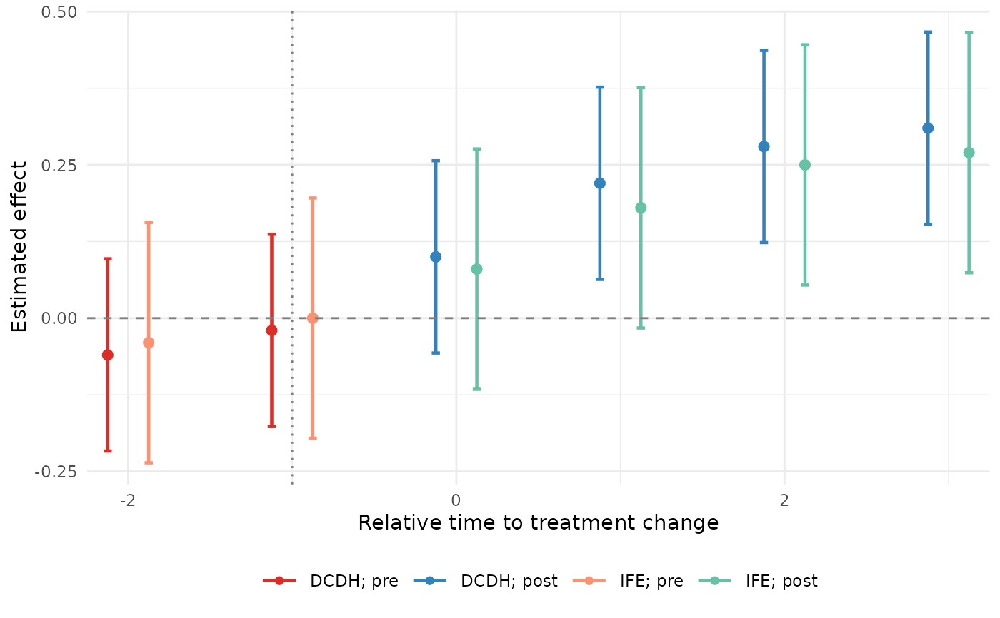
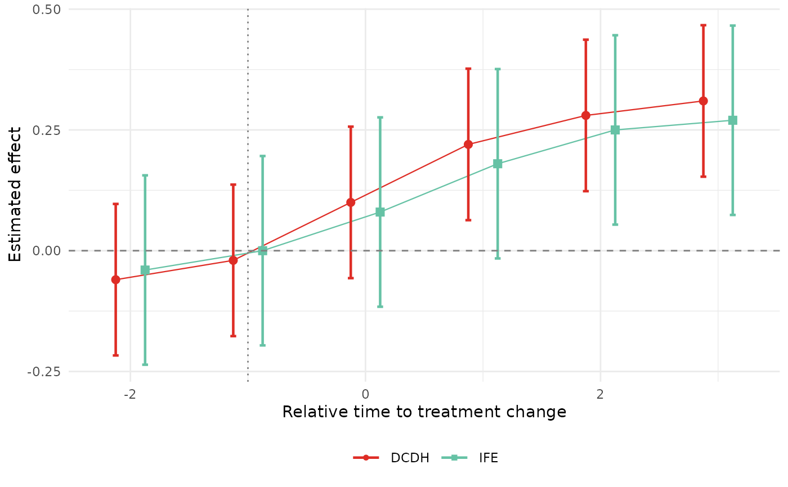

Plot one or more event-study tibbles on a single panel
Source:R/nabs_event_plot.R
nabs_event_plot.RdOverlays event-study estimates from any combination of supported estimators on a single ggplot2 panel. Two visual encodings are available via `style`:
Usage
nabs_event_plot(
...,
style = c("prepost_color", "method_shape"),
connect = FALSE,
connect_linewidth = 0.4,
reference = NULL,
reference_color = "grey20",
palette = "default",
shapes = NULL,
xlim = NULL,
ylim = NULL,
dodge = 0.5,
point_size = 2.5,
errorbar_width = 0.1,
x_break_by = 2,
show_pre_post_legend = TRUE,
xlab = "Relative time to treatment change",
ylab = "Estimated effect",
base_size = 11
)Arguments
- ...
One or more `nabs_event_study_tbl` objects. Bare arguments and a single list are both accepted.
- style
Visual encoding. One of `"prepost_color"` (default; color differs by pre/post) or `"method_shape"` (color and marker shape both encode the method, shared across pre/post).
- connect
Logical. If `TRUE`, point estimates within each series are joined by a thin line. Default `FALSE`. The line is split at the treatment boundary so pre- and post-treatment segments are not joined across the discontinuity.
- connect_linewidth
Width of the connecting line when `connect = TRUE`. Default `0.4`.
- reference
Optional `nabs_event_study_tbl` to draw as a neutral-color reference layer (typically a naive TWFE estimate). Drawn under the main series.
- reference_color
Color for the reference series. Default `"grey20"`.
- palette
Either `"default"` (the package's built-in palette, patterned after the DCDH/PanelMatch/IFE conventions in the codebase this package was extracted from), `"colorblind"` (Okabe-Ito), or a named character vector of colors. For `style = "prepost_color"` the names are keyed by `"<method>_<window>"`, e.g. `c("DCDH_pre" = "#DE2D26", "DCDH_post" = "#3182BD", ...)`. For `style = "method_shape"` the names are keyed by `"<method>"`, e.g. `c("DCDH" = "#DE2D26", ...)`.
- shapes
Optional named integer vector of plotting symbols keyed by `"<method>"`, used only when `style = "method_shape"`. Defaults to the package's built-in shape set.
- xlim, ylim
Numeric length-2 vectors for axis limits. `NULL` lets ggplot2 choose.
- dodge
Width of the position-dodge applied to points, lines, and error bars. The `reference` series shares this dodge with the main series, so all series (including the naive TWFE reference) get their own evenly-spaced horizontal slot and their CIs do not overlap. Default `0.5`.
- point_size, errorbar_width
Aesthetic controls for the geom layers.
- x_break_by
Spacing between x-axis ticks (default 2, giving ... -4, -2, 0, 2, 4, 6 ...). Event-study time is integer, so this avoids ggplot2's default half-integer breaks like 2.5.
- show_pre_post_legend
Logical. Only relevant for `style = "prepost_color"`. If `TRUE`, the legend keys are labeled `"<method>; pre"` / `"<method>; post"`. If `FALSE`, only one key per method is shown. Default `TRUE`.
- xlab, ylab
Axis labels.
- base_size
Base font size passed to `theme_minimal()`.
Details
* `"prepost_color"` (default) – each method gets its own color, with separate shades for pre- and post-treatment periods, mirroring common conventions in DCDH-style plots. Points are drawn as circles throughout. * `"method_shape"` – each method gets a single color *and* a single marker shape. Pre and post periods share both the color and the shape; they are told apart only by their position relative to time 0. Because method is double-encoded (color + shape), this style stays legible in grayscale.
An optional `reference` series – typically a naive TWFE fit from [naive_twfe()] – is drawn in a neutral color (default black) so the reader can see what the heterogeneity-robust estimators are correcting against.
Set `connect = TRUE` to join each series' point estimates with a thin line, in addition to the points and error bars.
Examples
dcdh_tidy <- as_nabs_event_study(
data.frame(
time = -2:3,
estimate = c(-0.06, -0.02, 0.10, 0.22, 0.28, 0.31),
std.error = 0.08
),
method = "DCDH",
outcome = "y"
)
ife_tidy <- as_nabs_event_study(
data.frame(
time = -2:3,
estimate = c(-0.04, 0.00, 0.08, 0.18, 0.25, 0.27),
std.error = 0.10
),
method = "IFE",
outcome = "y"
)
nabs_event_plot(dcdh_tidy, ife_tidy, xlim = c(-2, 3))

nabs_event_plot(dcdh_tidy, ife_tidy, style = "method_shape", connect = TRUE)
